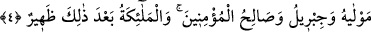

Âyet metninde yer alan “nebbee” kelimesi de yine edebî sanatlara uyularak bu şekilde
getirilmiştir. Denilir ki: “Enbee” ve “nebbee” fiilleri iki mef’ûle müteaddî olan
fiillerdir. Birinci mef’ûl kendisi olarak gelirken, ikinci mef’ûl ise bâ harf-i ceriyle
gelir. Birincisi bilindiği için hazf olunur, fiilin ikinci mef’ûle geçişi ise mef’ûlü cer
eden cer harfinin hazf olunmasıyla gerçekleşir. Âyette de böyle olmuştur. Âyette geçen
“felemmâ nebbehâ bihî” ifâdesi birinci, “felemmâ nebbeet bihî” ifâdesi ikinci, “men
enbeeke” ifâdesi ise üçüncü kullanıma göredir. Âyette geçen “el-‘Alîm” “el-‘Âlim” ve
“el-‘Allâm” kelimeleri ise Allah’ın esmâ-i hüsnâsındandır.
Allah Teâlâ’dan hayâ etmek, ona isyandan kaçınmak, Allah’ın günahlarını örtme
ihsânına aldanmamak, kahrının ansızın gelip çatmasından, hileye karşı vereceği cezanın
birden gelivermesinden korkmak, Allah’ın her şeyi hatta insanın içinden geçirdiklerini
ve kalbinden geçen vesveselere varıncaya kadar bütün her şeyi bildiğini bilen
kimselerin edeblerindendir.
Âlimlerden birisi anlatır: Bir gün karnım açtı. Tanıdığım kişilerden birisine aç
olduğumu söyledim. Fakat bana hiç bir şey yedirmedi. Yoluma devam ettim. Yolda yere
atılmış bir dirhem gördüm: Onu yerden kaldırınca birden ne göreyim! Üzerinde “Allah
Teâlâ senin aç olduğunu bilmiyor mu ki başkasından yiyecek istiyorsun!?” yazılıydı!
“Habîr” alîm mânâsına gelir. İmam Gazâlî (k.s.) der ki: Mutlak ilme itibâr
edildiğinde o mutlak olarak alîmdir. Mesele gayba ve bâtınî meselelere izâfe
edildiğinde “el-habîr” kelimesi kullanılır. Eğer zâhirî meselelere izâfe edilirse “eş-
şehîd” kelimesi kullanılır. Kul Allah Teâlâ’nın kendi fiillerinden haberdâr olduğunu,
içinden geçen sırları bildiğini bilecek olursa bilir ki, ameli ne kadar gizli olursa olsun,
kul unutmuş olsa bile Allah Teâlâ amelindeki her noktayı sonuna kadar sayar. Böylece
kul o kadar çok mahcûb olur ki neredeyse helâk olacakmış gibi olur.
Anlatırlar ki, adamın birisi günlerden bir gün düşünceye dalar. Kendi kendine der ki:
Yaşım şu kadar yıl, şu kadar ay, şu kadar gün ve gün sayarsak ömrüm şu kadar bin güne
varmış. Eğer ben her gün Allah’a sadece bir mâsıyet işlemişsem benim amel defterimde
şu kadar bin mâsıyet var demektir. Eğer ben her gün bir çok mâsıyet işlemişsem... Adam
bu hesaptan sonra bir çığlık atar ve dünyâdan ayrılır.
Fakîr derim ki:
Günahkârım gerçi fakat Rabbim Gafûr ve Kerîm’dir
Belki ben düşmüşe kereminden el verir
4. Eğer ikiniz de Allah’a tevbe ederseniz, (yerinde olur). Çünkü kalpleriniz